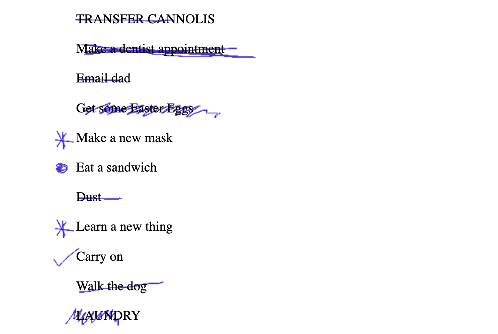

A Fine Line, 2021, Trapp Projects, Vancouver

Depth(10), 2021, 48x48in, acrylic on canvas.

Sole Contour, 2019, 20x20in, cast plaster, tissue paper, ink.

To do : To do, 2020, website. Collaboration with M.E. Sparks.
Visit

Finger, 2019, 60x60in, acrylic on shaped canvas, oak frame.

Ghost(I), 2016, 48x48in, cut 3/4in plywood, gallery paint.

Cloud, 2022, 8x11in, paper, ink.

First Place, 2019, 24x24in, acrylic on panel.

Uvula, 2019, 24x30in, acrylic on shaped canvas, oak frame.

Schooling Lines, 2021, website.
Visit

Notch, 2019, 9x10in, cast plaster, tissue paper, ink.

Coil, 2022, 11x12in, plotter drawing made with india ink.

Gulls, 2022, 11x12in, plotter drawing made with coloured ink.

Ghosts, Charles H Scott Gallery, 2016.

BFA Grad Show, 2012, NSCAD University, Halifax.

Reflections (I,II), 72x96in, acrylic on canvas.